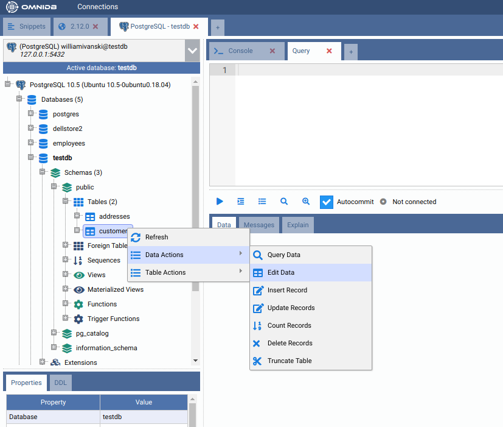
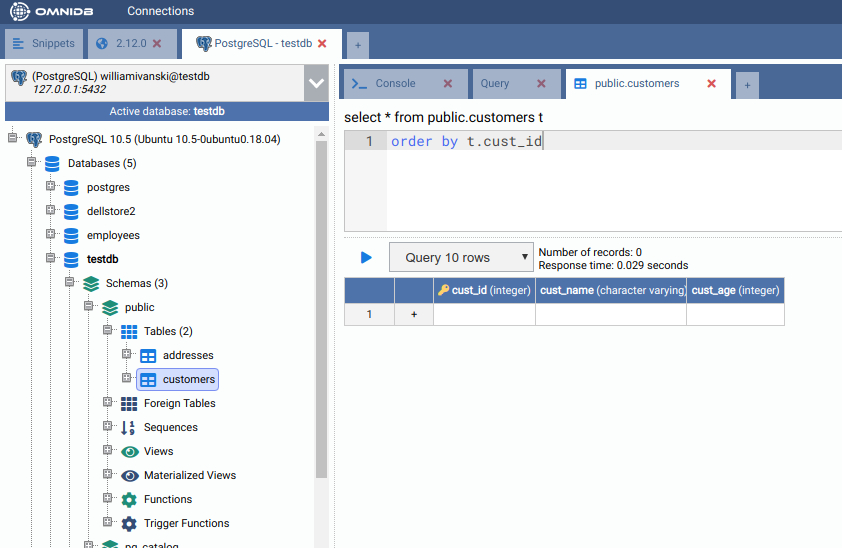
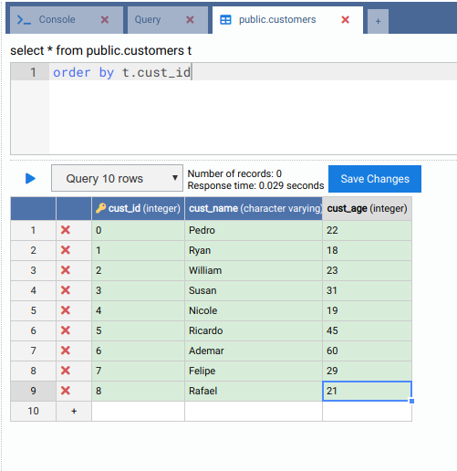
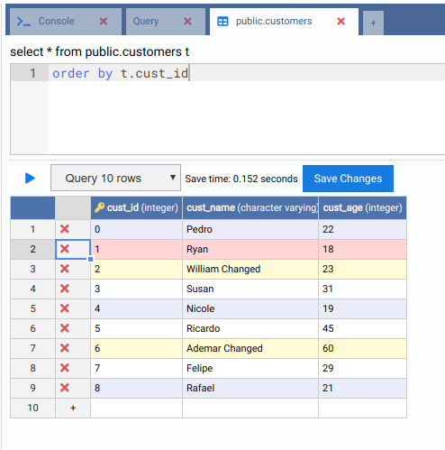
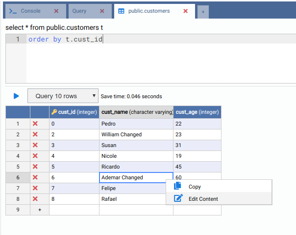
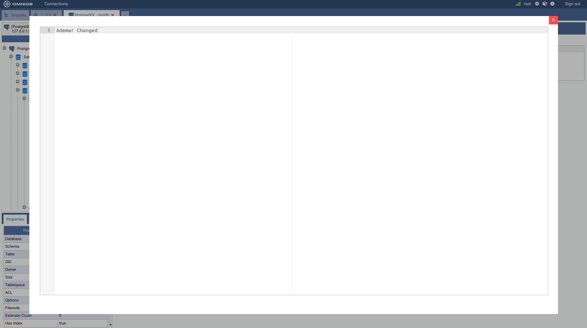
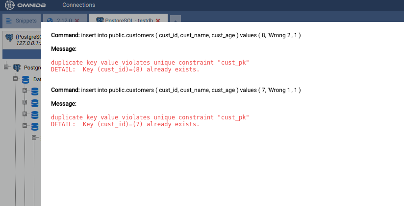
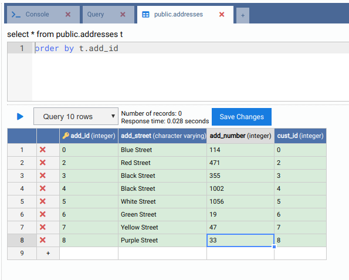

Gerir Dados de Tabelas
A ferramenta permite-nos editar registos contidos em tabelas através de uma interface muito simples e intuitiva. Dado que apenas alguns SGBD fornecem automaticamente um identificador único para os registos de tabelas, optámos por permitir a edição e remoção de dados apenas em tabelas que tenham uma chave primária. As tabelas que não a têm só podem receber novos registos.
Para aceder à interface de edição de registos, clique com o botão direito no nó da tabela e selecione a ação Data Actions > Edit Data (Ações de Dados > Editar Dados):


A interface tem um editor SQL onde pode filtrar e ordenar registos. Para evitar que a interface solicite demasiados registos, existe um campo que limita o número de registos a apresentar. A grelha de registos tem nomes de colunas e tipos de dados. As colunas que pertencem à chave primária têm um ícone de chave junto ao seu nome.
A linha da grelha que tem o símbolo + é a linha para adicionar novos registos.
Vamos inserir alguns registos na tabela customers:

Depois de guardar, os registos serão inseridos e podem ser editados (apenas porque esta tabela tem uma chave primária). Vamos alterar o cust_name de alguns dos registos existentes e, ao mesmo tempo, vamos remover uma das linhas:

As tabelas podem ter campos com valores representados por cadeias de texto muito longas. Para ajudar a editar estes campos, o OmniDB tem uma interface que pode ser acedida clicando com o botão direito na célula específica:


A interface deteta erros que possam ocorrer durante operações relacionadas com
registos. Para demonstrar, vamos inserir dois registos com o mesmo cust_id
existente (chave primária):

Mostra quais os comandos que se tentou executar e os respetivos erros.
Para concluir este capítulo, vamos adicionar alguns registos à tabela Address:
